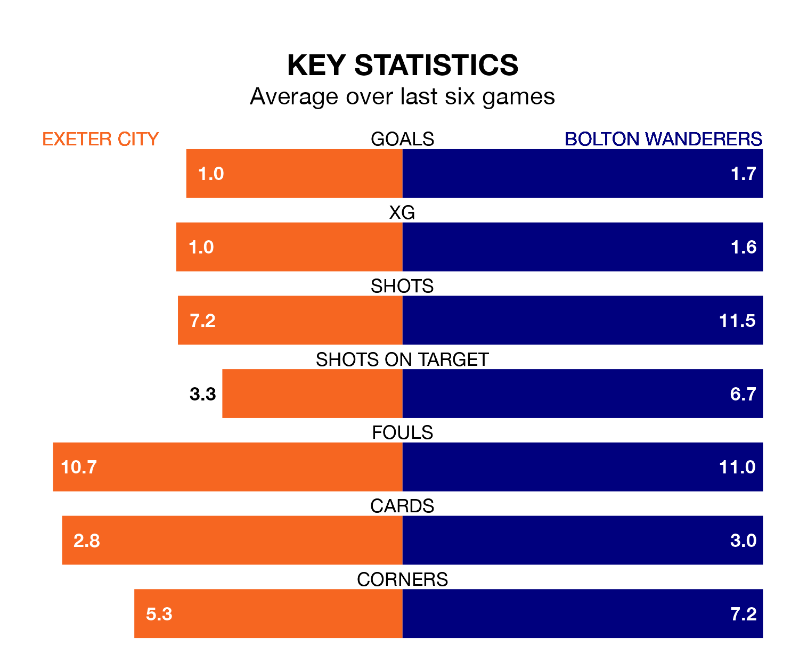

Bolton Wanderers travel to Exeter City on Saturday in EFL League One.
The visitors come into the game on the back of a draw in their last match, having tied with Barnsley 2-2 away, with goals from Victor Adeboyejo and Randell Williams.
Exeter, meanwhile, lost their last match, 2-1 against Peterborough United, with their goal scored by Tom Carroll.
With 27 goals in 36 games so far this season, Exeter are the league's second-lowest scorers with 0.8 goals per game. And they are conceding more than average, letting in 50 goals at a rate of 1.4 per game.
Bolton, meanwhile, are above average scorers, with 1.8 goals per game, compared to a league average of 1.3. They have conceded 1.1 goals per game.
Wanderers are second in the table after 36 games, of which they have won 21 and drawn seven, earning 70 points.
City are 15 places behind the away team in 17th, with 11 wins and seven draws putting them on 40 points.
With Nathan Baxter between the sticks, Bolton can rely on one of the league's safest pair of hands. He has kept 12 clean sheets in his 28 appearances this season in EFL League One.
In the hosts' net, Viljami Sinisalo has 10 clean sheets in 35 games. He has conceded a goal every 72 minutes, 40% more often than the 101 minutes between goals for Baxter.
In the last five years, Exeter and Bolton have played each other on five occasions. Exeter won one of them, Bolton three, and they drew once.
On average, Exeter scored 0.6 goals and Bolton 2.4 in those matches.
Their last meeting was on November 25, when Bolton won 7-0 at home.
Exeter are in mixed form in EFL League One, with two wins and a draw from their last six games.
With two wins and two draws over that period, Bolton's form is slightly better – they have taken eight points from 18, compared to Exeter's seven.
Saturday's match will be refereed by Daniel Middleton, who has taken charge of seven EFL League One games so far this season, issuing three red cards and booking 25 players. He has awarded two penalties.
The last Exeter game Middleton refereed was a 3-0 away loss to Oxford United on September 23. He is yet to oversee a match featuring Bolton this season.
Updated: 09:34 (UTC), 08/03/24